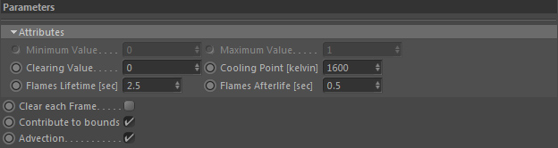

Fire

Please also refer to Channels::Bases::Parameters
This is a specialized Scalar Channel which has a fixed range of values between 0.0 and 1.0.
It is primarily a container to store and simulate fire generation data (hence the name).
The grid values are specifically used by the GOP::Combustion node to model the dynamic process of combustion.
Cooling Point [kelvin]
This value defines the temperature that flames need to reach before the temperature starts to cool down (this is a natural process in the combustion stage).
Normally you set this to a value near the maximum temperature (defined in the used temperature channel). 90% of the max. temperature is a good reference value.
Flames Lifetime [sec]
Defines how long the flames live until they start to cool down (so how long it takes until the temperature reaches the cooling point).
This value is for example used by the GOP::Combustion operator (non-fuel mode) and is given in seconds.
Keep in mind that this is no explicit value. As a fire simulation is dynamic these timings are approximate ranges.
Flames Afterlife [sec]
Defines how long the flames live after they reached the Cooling Point
(in other words how long it takes the flames to completely disappear after their lifetime).
Keep in mind that this is no explicit value. As a fire simulation is dynamic these timings are approximate ranges.